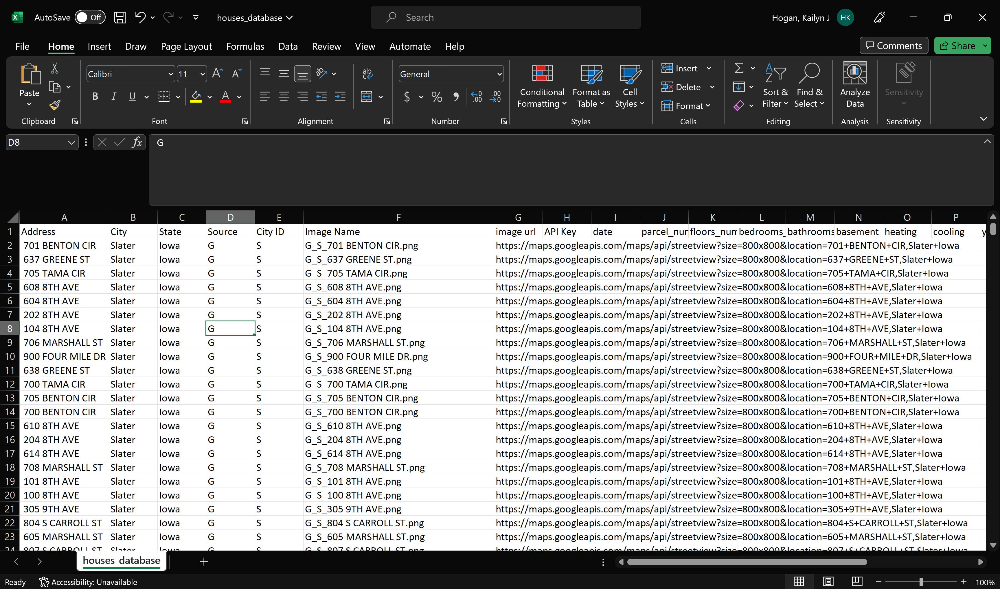
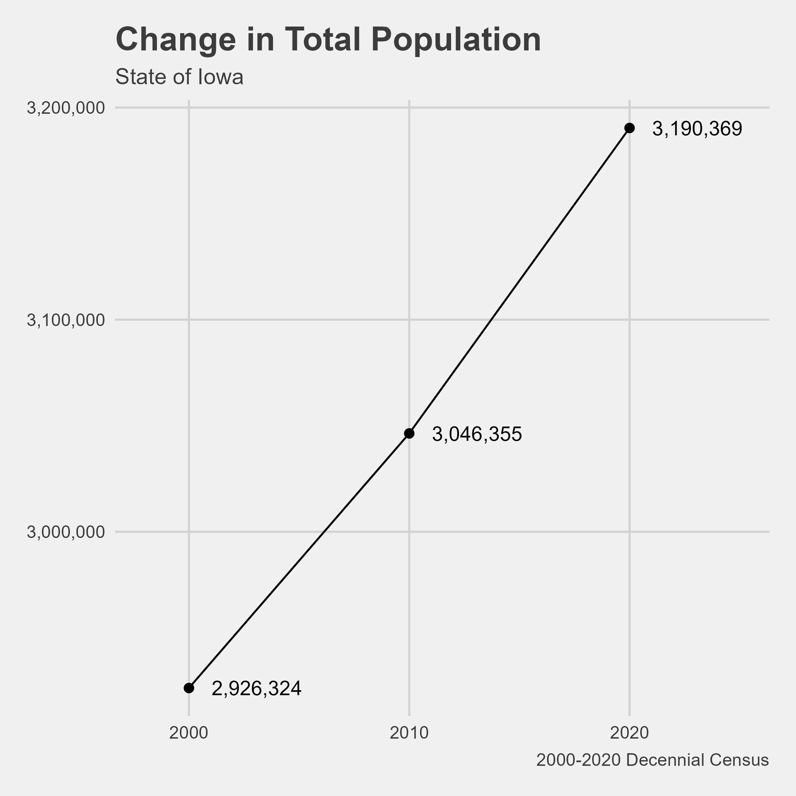
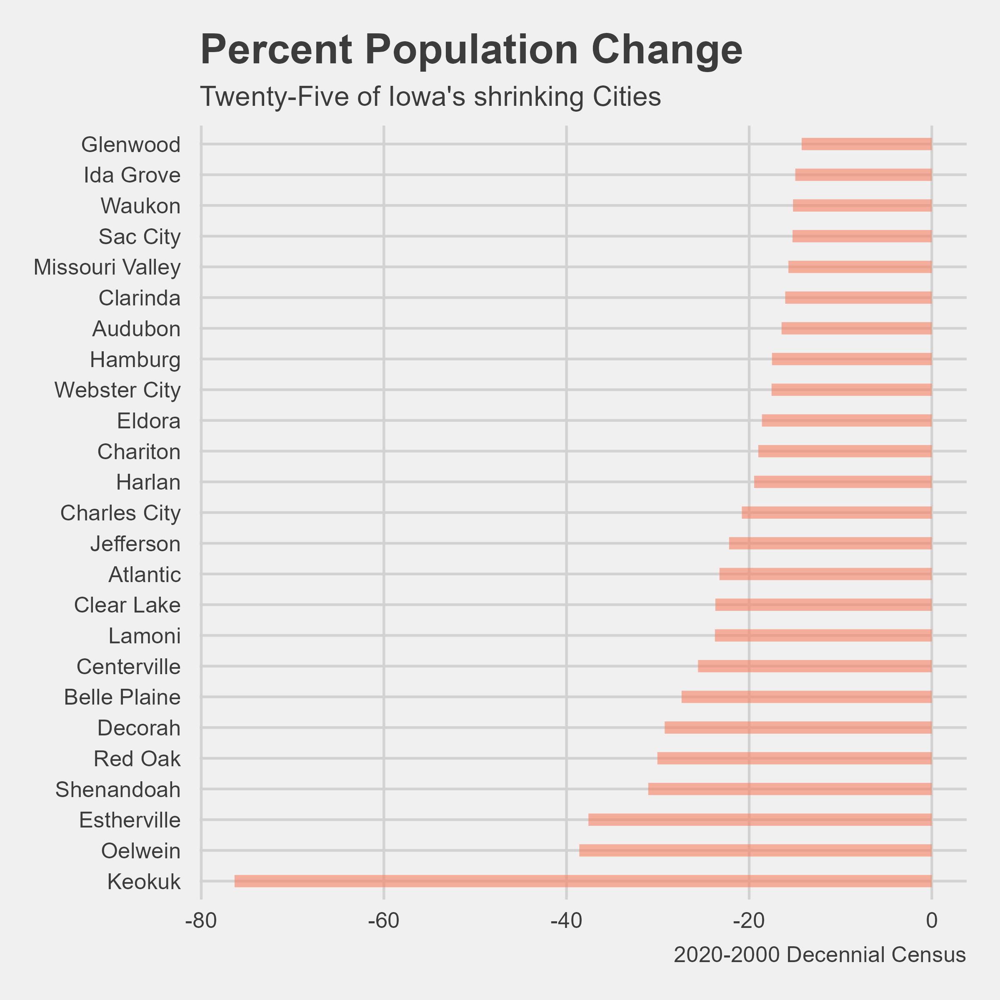
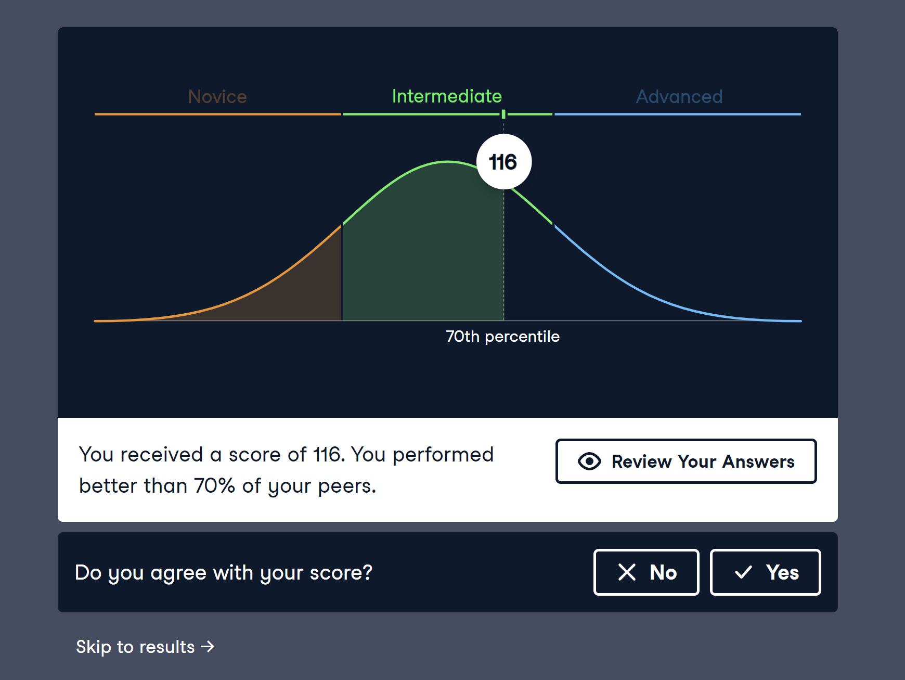
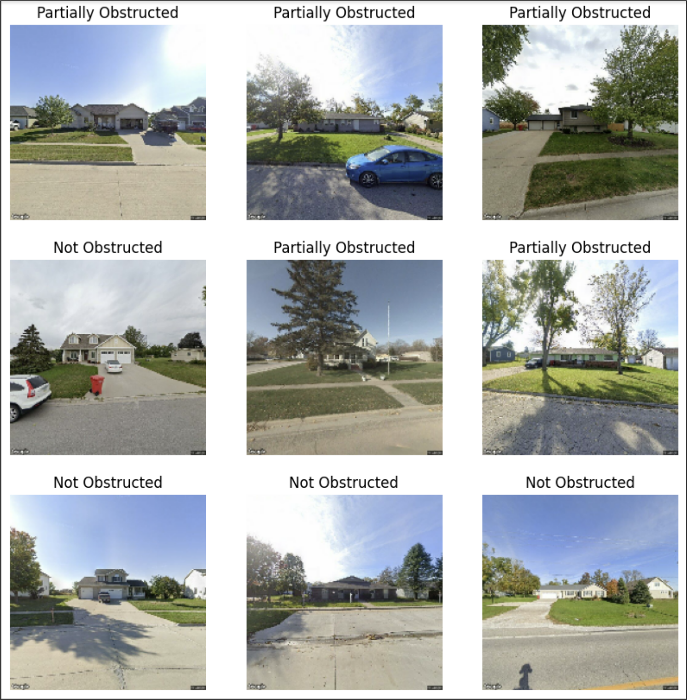

Chris informed us this morning that we need to include a demographic analysis or report in our project. We reviewed the initial project brief, and I realized that my group had skipped to the end of Year 1 when we started with AI Models. Whoops!
We need to go back at some point and work with demographics. I started a little bit of it today. We need to include the following:
Identify communities with populations between 500 and 10,000
Change in population
Presence of schools
Mean age of residents (I wonder if we should discuss changing this to median because it is less influenced by outliers)
Industry report
Ag Census data:
Number of Operators
Operator Owned
etc.
Housing appreciation and depreciation vs. inflation
We also started sorting the Google Street View images to train our AI Models on Monday. We need to sort based on six different models. We started with our first three.
Is a house present?
Yes
No
Is it a clear image of a house?
Obstructed
Partially obstructed
Not obstructed
Are there multiple houses?
One House
More than one house
When we started sorting the images, I noticed an error with an Independence image. The image on the left below is the one that we downloaded from Google Street View. Because I have been in Independence before, I could tell that this was not a photo of Independence. The photo on the left is from a different place, and the photo on the right is the same address but actually in Independence.
I checked the URL we used to generate the Google Street View image on the left, and I noticed that we did not specify the city and state. In fact, we didn’t specify the city and state for any of the Independence URLs or the New Hampton URLs. Thankfully this was a quick fix. We just added the city and state to the URL files, and the images downloaded quickly.
Error in Independence Address for Google Image API
While I was waiting for images to download on Monday, I started working on scraping Realtor.com. NOTE: it is Realtor.com not Realtors.com. I definitely have been misspelling it. From the brief look I took at web scraping Realtor.com, it looks like it might be slightly more complicated than Zillow.
The address data is stored differently on Realtor.com, and I was not successful in scraping it. Instead of being on one line of HTML, it is split up on multiple.
Realtor.com address HTML
Tuesday
On Tuesday, we continued sorting images to train our AI Models. I finished sorting the Slater images for a clear view of the house yesterday, and today I worked on the same sorting for Grundy Center.
We need about 200 images for each category to train our model. We are struggling to find enough “bad” images.
Chris came over to talk to us about the app he is creating for the Housing Team. His app is meant to make image sorting easier, so he wants to be able to get it to us as soon as possible. He needed a database created with the house address, Google Street View image URL, and city to finish the app. I created the housing database for all the addresses for Slater, Independence, Grundy Center, and New Hampton.

Chris also suggested that Angelina and I take a look at spatial graphing in R. He said to try the DataCamp course Geospatial in R, and he said to look up Kyle Walkers TidyCensus book.
On Tuesday, I also worked more on the demographics analysis that Chris asked for. I am starting the analysis by looking at total population in Iowa’s communities. The first plot I created plotted the change in population for Iowa as a whole.
library(tidyverse)
Warning: package 'tidyverse' was built under R version 4.1.3
Warning: package 'ggplot2' was built under R version 4.1.3
Warning: package 'tibble' was built under R version 4.1.3
Warning: package 'tidyr' was built under R version 4.1.3
Warning: package 'readr' was built under R version 4.1.3
Warning: package 'purrr' was built under R version 4.1.3
Warning: package 'dplyr' was built under R version 4.1.3
Warning: package 'stringr' was built under R version 4.1.3
Warning: package 'forcats' was built under R version 4.1.3
Warning: package 'lubridate' was built under R version 4.1.3
-- Attaching core tidyverse packages ------------------------ tidyverse 2.0.0 --
v dplyr 1.1.2 v readr 2.1.4
v forcats 1.0.0 v stringr 1.5.0
v ggplot2 3.4.2 v tibble 3.2.1
v lubridate 1.9.2 v tidyr 1.3.0
v purrr 1.0.1
-- Conflicts ------------------------------------------ tidyverse_conflicts() --
x dplyr::filter() masks stats::filter()
x dplyr::lag() masks stats::lag()
i Use the conflicted package (<http://conflicted.r-lib.org/>) to force all conflicts to become errors
library(tidycensus)library(ggthemes)# renaming the variables now so I don't have to do it laterpop00 <-c("pop"="P001001")pop10 <-c("pop"="P001001")pop20 <-c("pop"="P1_001N")# iowa 2000 populationiowa00 <-get_decennial(geography ="state",state ="IA",year =2000,output ="wide",variable = pop00) %>%mutate(year =2000)
Getting data from the 2000 decennial Census
Using Census Summary File 1
Getting data from the 2020 decennial Census
Using the PL 94-171 Redistricting Data summary file
Note: 2020 decennial Census data use differential privacy, a technique that
introduces errors into data to preserve respondent confidentiality.
i Small counts should be interpreted with caution.
i See https://www.census.gov/library/fact-sheets/2021/protecting-the-confidentiality-of-the-2020-census-redistricting-data.html for additional guidance.
# bind 2000-2020 data togetheriowa <- iowa20 %>%bind_rows(iowa10,iowa00)# plot itchange_pop_iowa.jpg <- iowa %>%ggplot(aes(x = year, y = pop))+geom_line()+geom_point(size =2)+geom_text(aes(label = scales::comma(pop)), hjust =-.25)+scale_y_continuous(label = scales::comma)+# how do I change the size of the axis labels?scale_x_continuous(limits =c(1998, 2025),breaks =c(2000,2010,2020))+theme_fivethirtyeight() +theme(legend.position ="bottom")+labs(title ="Change in Total Population",subtitle ="State of Iowa",y ="Population",x ="",color ="", caption ="2000-2020 Decennial Census")# save the plot as a .jpgchange_pop_iowa.jpg %>%ggsave(filename ="change_pop_iowa.jpg",width =6,height =6, dpi =400)

Next, I pulled the total population for each individual community in Iowa for 2020, 2010, and 2000. Using the 2020 Decennial Census data, I found that there are 408 communities in Iowa that fall within our population parameters. This is 39.69% of all cities in Iowa.
I also looked at the growth rate for communities in Iowa. Because most of Iowa’s cities are on the smaller size, I don’t think that population is an effective indicator for this project. In fact, the median population for communities in Iowa is 384. I added a column for growth rate to my cities data frame containing the communities in Iowa that fall between our population parameters. Growth rate is calculated by dividing the change in population by the time period the change occurred.
Growth Rate = N/t
I also plotted the twenty-five lowest growth rates in Iowa.

Keokuk really stands out on this plot. Earlier in the Housing project, there was discussion about the deteriorating qualities of Lee County, the county of which Keokuk resides. This anomaly will need further investigated.
Next, I want to look at which communities are growing, stable, and shrinking. The growth rates column should aid in this analysis.
Wednesday
Because I will be doing a lot of data visualization in the coming weeks with my demographics analysis task, I decided it would be a good idea to refresh my data visualization skills. I scored a 116 on the Data Visualization in R assessment I took on DataCamp. I am pretty happy with that score.
I feel that I have quality skills in terms of data visualization, but I am lacking when it comes to organizing the data for visualizations. I think completely the track for Data Visualization in R would be helpful.

While I was on DataCamp on Wednesday, I also completed the Introduction to Deep Learning with Keras course so I would be ready to create an AI Model. I am in charge of making the model that identifies clear images of houses. We are using Google Collab to create our models, and all the data is being stored in Google Drive. The “clear images” are sorted into three categories: Obstructed, Partially Obstructed, and Not Obstructed.

I was successful in creating the AI Model on Wednesday. Below is the accuracy of my model. There is still a long way to go with it. The Housing team has a lot more photos to gather to train our models on and make them as accurate as possible. Now that our AI Models are created, we can go back to web scraping and gathering images.